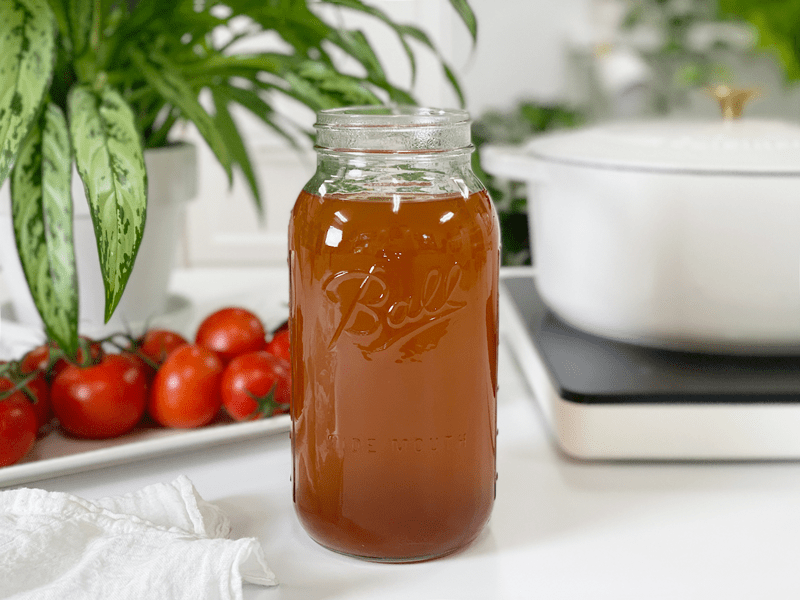
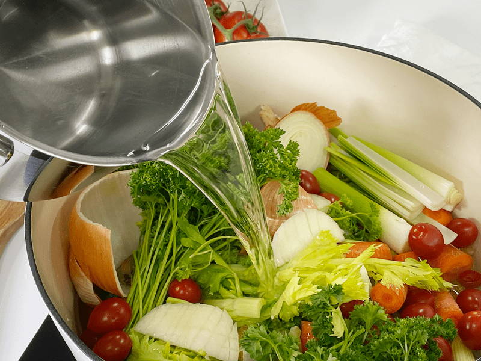
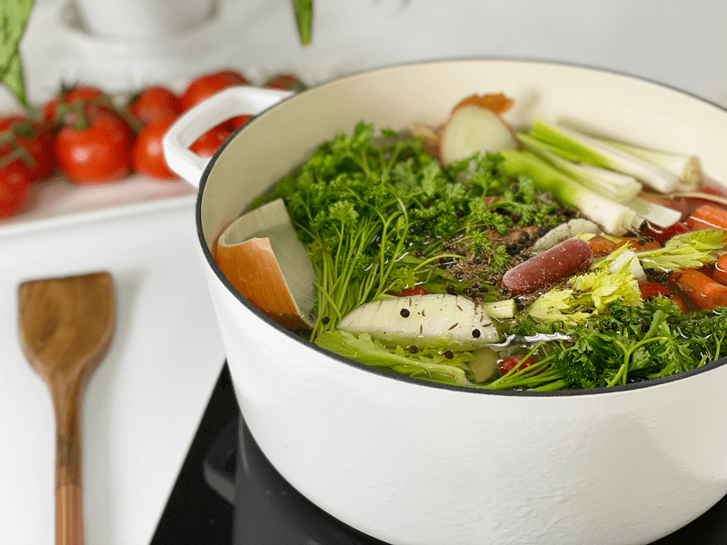
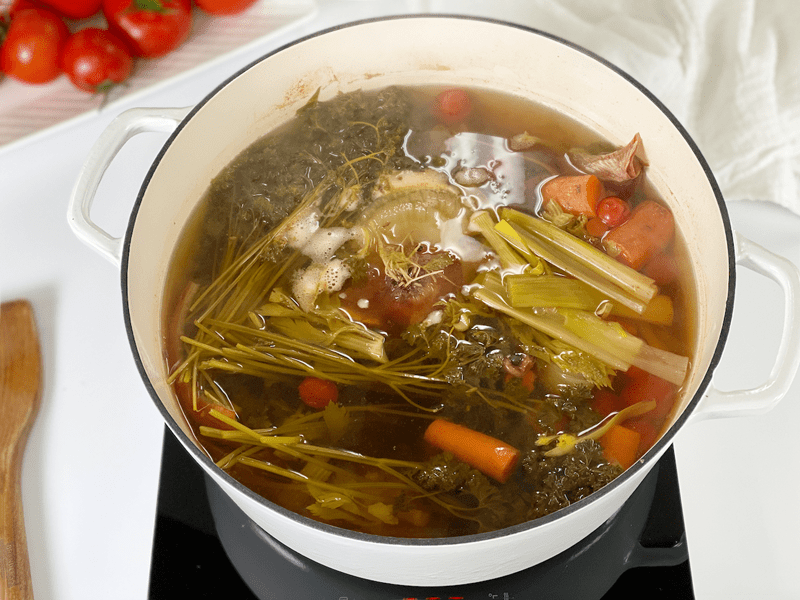
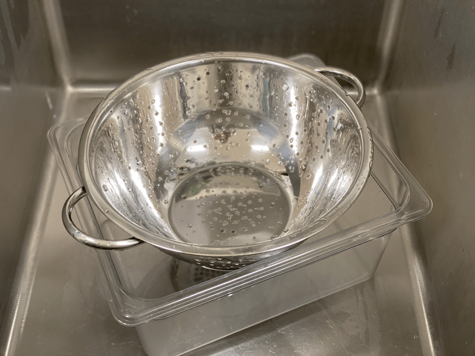
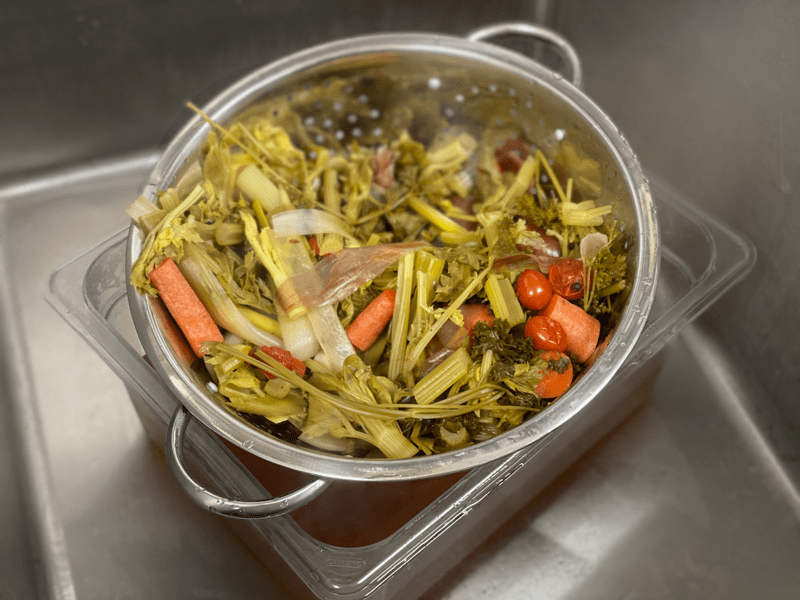

Vegetable Broth | No Waste | Made from Veg Scraps
We should always practice being good stewards of our money, and one way to do that is to avoid food waste. There are many ways to go about saving money, but today I will share with you how to make vegetable broth from veggie scraps that you might have otherwise thrown away. It’s also an excellent way to use veggies that are in the fridge and are begging to be used up before they expire.

This style of broth is vegetarian and vegan-friendly and can be used in recipes that call for vegetable or chicken stock. It is made with nutritious, real, whole food that adds an extra depth of flavor and texture to your soups, grains, sauces, etc. The secret of a delicious broth is balanced flavor; we a broth that’s not too sweet, bitter, or pungent. We also need to make sure that we use the right ratio of ingredients to water, so it doesn’t taste too diluted or concentrated.
Every time I peel carrots or chop celery or have fresh herbs that are losing their freshness, I place the scraps into a freezer-safe bag and pop them into my freezer. When I am ready to make vegetable broth, I pull out the scraps and have almost everything I need to make incredibly rich broth–using things that generally go right into the trash.
With a few added ingredients, these simple scraps turn into a rich, flavorful vegetable broth that is better than anything you can purchase at the store. Plus, by making broth at home, I can control the sodium content and the quality of ingredients. No yeast extract, gluten, or MSG in this broth!

Broth-Making Foundations
- When cooking savory dishes that call for water, I use vegetable broth instead.
- The chances are that the veggie scraps you collect are not enough to bring a full-bodied flavor to the broth. I always start my broth with chopped carrots, onions, mushrooms, and celery + veggie scraps.
- Store your veggie scraps in a gallon-size ziplock bag in the freezer. Continue to add more to the bag until it is full. Make sure to get all the air out of the bag to avoid freezer burn.
- Make sure that all the produce you use is clean and free from dirt.
- Depending on the veggie scraps you have stored up, you might want to add garlic, onions, parsley, and other aromatics. Tomato paste and dried mushrooms add a great depth of flavor, too. The tomato paste adds a bit of sweetness and rich, concentrated flavor to the broth. The dried mushrooms add earthiness and umami flavor to this broth.
- The key is NOT to overcook the broth, regardless of what method you use. If you do, it can become bitter and too earthy-tasting.
- Browning the onions and using mushrooms gives this stock a deep golden-brown color and plenty of structure and savory flavors.
- If you plan on making a broth reduction (concentrate), omit the salt.
- Be sure to read through the list of veggies that work and don’t work so well. We want to avoid making a tasteless, cloudy broth.
- I like to rough chop all my veggies so more flavor can escape into the liquid.
Tried and True Vegetables
- Carrots–diced or even the peels.
- Celery–I juice celery every day; save those end pieces, or the leaves that you may pull off.
- Cilantro–but only in small amounts; otherwise, it can overpower the broth.
- Garlic–adds excellent flavor.
- Fresh herbs–use fresh or use when they start wilt to avoid waste.
- Kale, chard, collards–the stems are full of nutrients. After removing the leaves, save the stalks for broth.
- Leeks–even the stem can be used, just make sure that you wash it thoroughly, since dirt likes to hide in all the layers.
- Mushrooms–if you don’t like eating the stems, pop them off and save for making broth. If using the whole mushroom, it will impart a nice rich taste to the broth.
- Onion skins–add color to the broth. Just don’t use too many of them, unless you want your stock to have a dark color.
- Potato peels–can be used in small quantities. They add an earthy but slightly bitter taste. Too many can make the stock cloudy.
Questionable Vegetables
- Don’t use moldy, yellowing, or questionable veggies or herbs. This is not a way to resurrect them from the dead.
- Carrot tops (leafy part)–can impart a bitter taste.
- Corn–doesn’t add a lot of flavor and can make the stock/broth cloudy.
- Cruciferous veggies–cabbage, broccoli, cauliflower, and brussels sprouts can leave a bitter flavor in the broth.
- Asparagus
- Green beans–bbecome bitter if slowly simmered too long.
- Lettuce–doesn’t impart much for flavor.
- Starchy vegetables such as potatoes and turnips will make for gummy, cloudy vegetable stock.
- Beets overpower their aromatic counterparts.
- Zucchini becomes bitter if slowly simmered too long.
 Ingredients
Ingredients
- 4+ cups assorted vegetable scraps
Seasonings
- 2 bay leaves
- 1 tsp whole peppercorns
- 3 sprigs of fresh thyme or a handful of parsley
- 1 Tbsp tomato paste
- 1 tsp whole peppercorns
- 2 tsp kosher salt
Preparation
Instant Pot Method
-
Place all the vegetable scraps and spices in the inner pot of the Instant Pot. Then add max the amount of water needed to fit into the size pot you have (I use an 8-quart)–there is a fill line inside the pot.
-
Secure the lid and flip the pressure valve to “steaming.”
-
Press the “Manual” button and adjust the cooking time to 15 minutes on High Pressure + 15 minutes Natural Release. After 15 minutes, turn the venting knob to the venting position to release the remaining pressure. Open the lid carefully.
-
Once cook time has ended and the machine beeps, let the pressure release naturally.
-
Strain the solids from the broth and discard.
-
See below for how to store the broth.
Stove Top Method
-
Place all the ingredients in a large stock pan and cover with water.
-
Bring to a gentle boil, and then turn heat to low, cover, and simmer for 1 to 2 hours.
-
Strain the solids from the broth and discard.
- See below for how to store the broth.
Slow Cooker Method
-
Place all the ingredients in the slow cooker, then add max amount of water needed to fill the slow cooker.
-
Cook on low for 8-12 hours or on high for 5-6 hours. If cooked for too long, it can taste bitter, so start taste testing around the 5-hour mark.
-
Strain the solids from the broth and discard the solids.
- See below for how to store the broth.
Storing the Broth
- Once the broth is done cooking, strain out the solids by pouring through a mesh strainer.
- If you used the Instant Pot method with the steamer basket, just pull the basket out and let the liquid drain away.
- Be sure to discard the scraps in the trash or the compost bin.
- Once strained, let it cool before transferring into airtight containers (don’t let it sit out more than 2 hours).
- I keep some in glass jars to be stored in the fridge to use throughout the next week. I don’t push it past 7 days.
- I also freeze measured out portions of the broth in 2-to-4-cup quantities in freezer-safe containers for up to 3 months. It may keep longer, but I find that it starts to lose its flavor.
- Be sure to leave 1″ of room in the containers, as the liquid will expand once it freezes.
- Label, date, and store.
-
-
Add water to the vegetable scraps…
-

-
Make sure to add enough so you can submerged under the water.
-

-
Cook for a few hours…
-

-
Place a colander in a larger container so it can catch the broth when you pour out the cooked veggies.
-

-
Let all the broth strain from the veggies. Toss or compost the veggies.
-
-
Pour your delicious broth into airtight containers and enjoy in many recipes.
© AmieSue.com